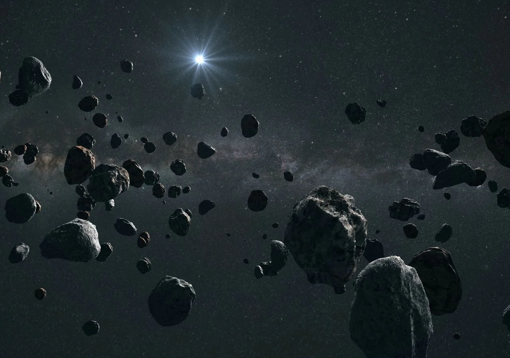

Como o sistema solar foi formado

Segundo a Nasa, acredita-se que o sistema se formou a partir de uma única nuvem plana de gás. Outra
teoria, de acordo com a agência espacial, diz que ele se formou quando um grande objeto passou perto do
Sol, empurrando uma corrente de gás para longe da estrela. Essa teoria explica que os planetas surgiram
a partir dessa corrente de gás.
Independente de como ele surgiu, a Nasa estima que o sistema solar exista há mais de 4 bilhões de anos. O
Sol está ao centro da organização de elementos, que tem a forma elíptica (oval), e é o maior objeto
espacial do sistema, representando 99% da massa total.
Quais planetas estão no sistema solar

Além dos grandes planetas, que são Mercúrio, Vênus, Marte, Júpiter, Saturno, Urano e Netuno – além da
Terra – o sistema solar também é composto pelos satélites naturais que, além de orbitarem o Sol, também
rodeiam os próprios planetas. O mais conhecido entre os satélites é a Lua, que orbita a Terra.
Há também os chamados planetas anões, como Plutão, que está localizado na região do sistema conhecida
como Cinturão de Kuiper, além da órbita de Netuno. Fora Plutão, a região de Kuiper também abriga os
planetas anões Makemake e Haumea. Outros dois planetas anões – Eris e Ceres – complementam a lista.
O que mais forma o sistema solar

Entre os outros objetos que compõem o sistema solar estão os asteroides (objetos espaciais rochosos que
podem ter quilômetros de diâmetro) e os meteoróides (pedaços pequenos de matéria, parecidos com pedra ou
metal). Esses elementos podem ser encontrados, por exemplo, no Cinturão de Asteroides, uma região entre
as órbitas de Marte e Júpiter.
Por fim, os cometas, corpos de gelo, poeira e gás viajando a milhares de quilômetros por hora pelo
espaço também mantêm sua própria órbita ao redor do Sol. Segundo a Nasa, acredita-se que haja mais de
100 bilhões de cometas no sistema solar.